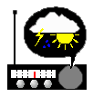
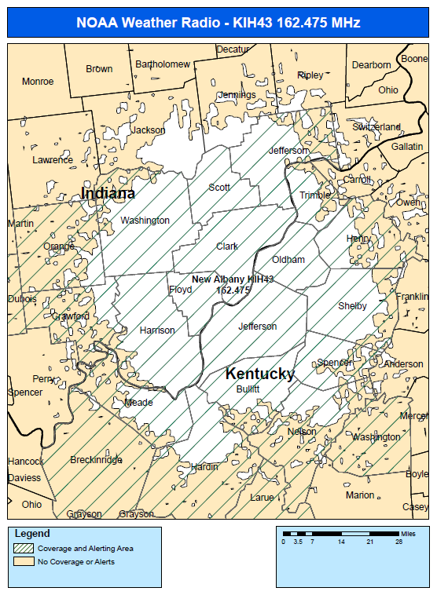

Heavy Rain and Thunderstorms in the Lower Ohio Valley and Southeast; Flooding Continues Along the East Coast of Florida
An approaching cold front may produce isolated heavy rainfall and severe weather today over portions of the Lower Ohio Valley and Southeast. While the heavy rainfall is ending across east Florida, significant river flooding is forecast along the St. John’s and the Peace rivers through the end of the week as flood waters will be slow to recede. Read More >
LOADING...
 NOAA All-Hazards Weather Radio
Transmitter: Louisville, KY |
||||||||||||
|
||||||||||||
| Counties Served (Primary): | FIPS CODE: | Counties Served (Secondary): | FIPS CODE: | ||||||||
|
Bullitt (KY) |
021029 018019 018043 018061 021103 021111 018077 021179 021185 018143 021211 021215 021223 018175 |
Breckinridge (KY) Crawford (IN) Hardin (KY) Jackson (IN) Jennings (IN) Lawrence (IN) Meade (KY) Orange (IN) Perry (IN) |
021027 018025 021093 018071 018079 018093 021163 018117 018123 |
||||||||
|
The Tuesday tone test is between 6pm and 7pm local time |
|||||||||||

BACK
 Local Radar
Local Radar